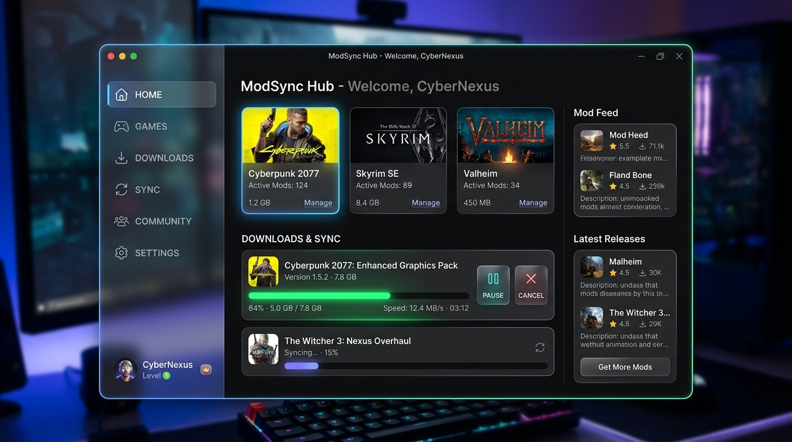

ZIPファイルで配るのはもうおしまい。
「マニフェスト(JSON)」だけを共有し、公式から直接一括ダウンロード。
野良MODもCloudflare R2でシームレスに同期。

マルチプレイやMODパックの共有で抱えていた課題を、すべて解決します。
制作者はゲームフォルダを指定するだけ。自動でModrinthやCurseForgeのプロジェクトを特定し、共有用の設計図（JSON）を一瞬で作成します。
プレイヤーは受け取ったJSONを読み込むだけ。足りないMODだけを高速で一括ダウンロードし、すぐに遊べる環境を構築します。
公式に存在しない「野良MOD」や自作MODも心配無用。制作者のCloudflare R2（無料枠）に自動アップロードし、シームレスに同期可能です。
完全無料でオープンソース。Windows、Mac、Linuxに対応しています。